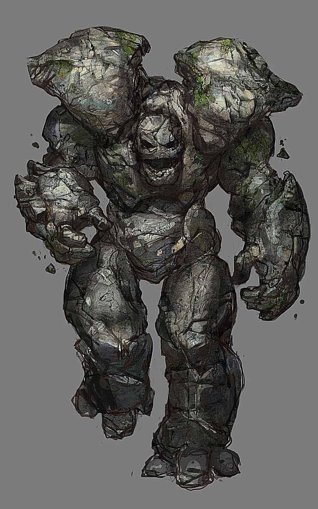
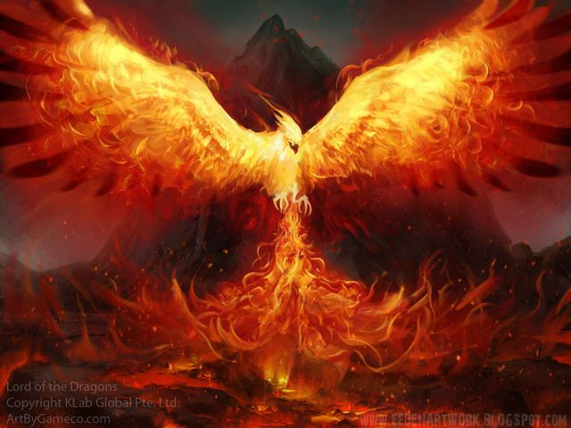
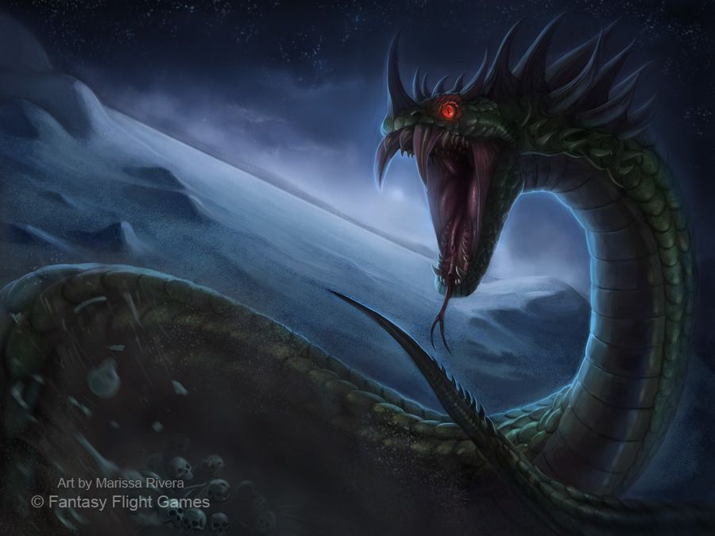
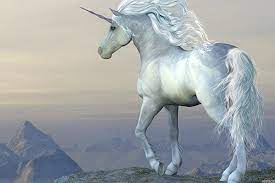
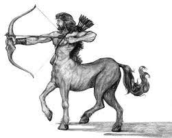
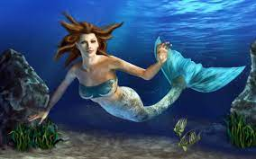
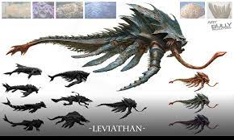
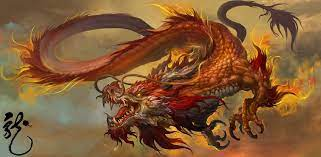
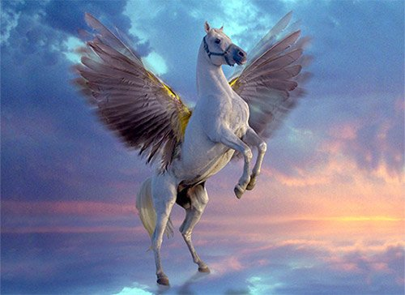

| Number |
Animals Name |
Image |
Description |
| 1 |
Golems |
 |
Famous in Jewish folklore, golems are most often depicted as beings created from inanimate matter such as clay or mud, which have been brought to life to serve some purpose.
For example, in some stories, a golem is created to defend against antisemitic attacks. |
| 2 |
Oni |
 |
In Japanese myth, oni are people who were so truly wicked in their lives that they transformed into demons in hell. Some were even bad enough to be transformed while still alive! These giant, scary monsters with red or blue skin, horns, and tusks are traditionally the servants of hell.
|
| 3 |
Phoenix |
 |
The phoenix is a mythical eagle-like creature, generally known for bursting into flame at the end of their life, only to emerge from the ashes as a young phoenix.
In both ancient Egyptian and Classical myth, the phoenix was associated with sun worship and was depicted as a large bird, with gold and red feathers that could live for hundreds of years. |
| 4 |
Basilisk |
 |
In European legend, the basilisk is a serpentine creature who, much like the Gorgons of Greek myth, can kill with one look.
Basilisks, sometimes called the kings of serpents, are featured in literature, including works by Chaucer and Leonardo da Vinci, as well as religious texts such as the Bible. |
| 5 |
Unicorn |
 |
Unicorns, a horse or goat-like animal with a single horn, are a commonly depicted mythical creature.
From ancient mythology (in Mesopotamia, India, Greece, and China) all the way into the modern age, people have been fascinated by these majestic creatures. |
| 6 |
Centuar |
 |
Originating in the mythical tales of ancient Greece, the legend of the centaur has long fascinated mankind.
Being part man and part horse, the centaur is stuck between two worlds:
that of the wild beast and that of the civilized human being. |
| 7 |
Mermaids |
 |
Since ancient times, sailors crossing the world's oceans have reported seeing mermaids, beautiful fish-maidens with long flowing hair and incredible powers of seduction.
These exquisite creatures are described as irresistibly attractive with the torso and head of a young woman and the lower body of a fish. |
| 8 |
Leviathan |
 |
A giant sea creature with glowing eyes and a nasty habit of crushing ships and devouring ocean-going humans.
With its enormous body and scaly skin, Leviathan is usually referred to as a giant monstrous fish, but is also commonly described as a serpent, crocodile or marine mammal |
| 9 |
Dragons |
 |
Dragon mythology extends back through the ages at least 4,000 years. They are commonly depicted as large flying reptiles that breathe fire or shoot deadly poison from their nostrils.
Tales of these giant beasts date to the dawn of human existence. |
| 10 |
Pegasus |
 |
This mythical animal is the son of Poseidon, god of the sea, and the monster Medusa. He is portrayed as a beautiful winged horse, sometimes white, sometimes white with gold wings and sometimes gold all over.
There are a couple of versions of the birth of Pegasus in Greek mythology. |